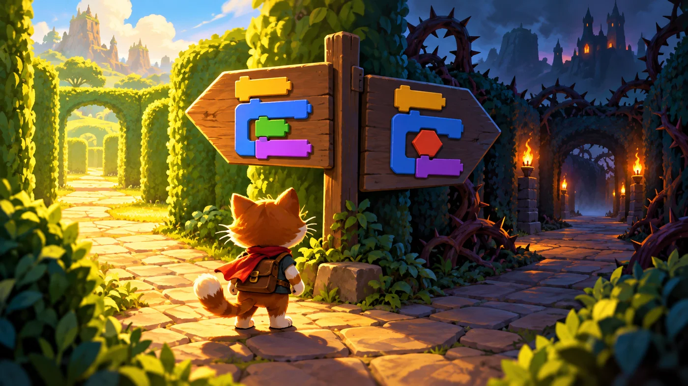
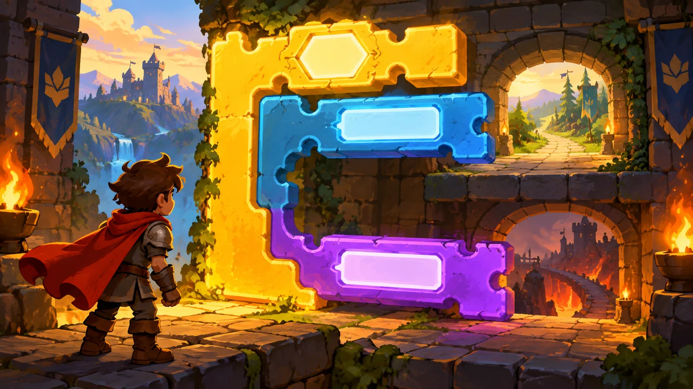

扣哒考级 · GESP 图形化 一级 · 第 6 单元 | 积木花园 BLOCKBLOOM GARDEN
分岔的花篱 分支结构：如果……那么
Branching: If-Then

安雅
红发队长 · 你的旅伴
花篱在中间分开了。左边那条路亮着，右边那条隐在影子里。
安雅没有直接告诉你该走哪条，而是把一块木牌塞到你手里： "路牌上写着条件，路你自己选。"
这就是分支——程序第一次有了"看情况办事"的能力。
安雅没有直接告诉你该走哪条，而是把一块木牌塞到你手里： "路牌上写着条件，路你自己选。"
这就是分支——程序第一次有了"看情况办事"的能力。
安雅 · 红发队长
分两步学：先学"如果……那么"——满足条件才做事；再学"与、或、不成立"——把条件拼起来。一级卷子里这类题最爱问"条件不成立时会怎样"，答案永远是一句话：跳过整块，继续往下。
0 单元导语与目标
Before We Start
0.1 学习目标
- 理解分支结构：满足条件才做某件事；
- 会用如果……那么写出"碰到了就做事"的效果；
- 会把侦测积木、比较运算、逻辑运算当作"条件"塞进判断里；
- 分清如果……那么与如果……那么……否则；
- 会写"判断里再判断"的嵌套用法。
0.2 考纲对照
| 考纲知识块 | 考纲要求 | 本单元小节 |
|---|---|---|
| 4 三大基本结构 | 分支结构 | 1.1～1.2、3.1～3.3 |
| 8 侦测与控制 | 把侦测结果当作判断条件 | 2.1 |
| 3 编程数学 | 关系的比较、逻辑运算 | 2.2、2.3 |
分支是"让程序变聪明"的第一步。考纲一级只要求掌握如果……那么，' '但"否则"和嵌套也要认得——考试里常用来出选项。
1 生活里处处是选择
Branching
1.1 什么是分支
花篱走到一半分成了两条：左边那条亮着，右边那条隐在阴影里。 小猫站在岔口上，得先看一看路牌，才能决定往哪边走。

assets/illustrations/scratch-L1-06-01_hedge_fork.webp
【配图位】树篱迷宫小径分成两条，小猫站在岔口看着路牌，一条路明亮、一条路在阴影中。（提示词见《GESP配图清单与AI绘图提示词》第四节 1-6）
打个比方：顺序结构是"一条直线走到底"，分支结构是"走到岔路口先看一眼路牌"。看路牌就是判断条件，往哪边走就是执行哪一段积木。
1.2 如果……那么
图形化编程里最常用的分支积木是这一块。它的形状像一个躺着的 C：
重点示例：分支的基本写法
图形化积木
读法 六边形槽里放条件；条件成立，就执行口里的积木；不成立，就跳过整块，接着往下走
注意它的"两条出口"：条件成立——执行口里的积木，然后继续往下；
条件不成立——整块跳过去，直接执行下面的积木。
无论成立还是不成立，程序都不会卡住，它只会选一条路走。
条件不成立——整块跳过去，直接执行下面的积木。
无论成立还是不成立，程序都不会卡住，它只会选一条路走。
2 条件从哪儿来
Where Conditions Come From
2.1 六边形插进 C 形
"如果……那么"上留着一个六边形的槽。能插进去的，只有同样是六边形的东西：
图 2（SVG）：三类六边形积木
2.2 大于、小于、等于
重点示例：三块比较运算积木
图形化积木
读法 两边都能塞东西（数字、变量、随机数），结果只有"成立"或"不成立"
打个比方：比较积木就像一把天平——两边放上东西，它只告诉你"哪边重"。比较的结果不是数字，而是"成立 / 不成立"，所以它长得是六边形。
2.3 与、或、不成立
图 3（SVG）：与、或、不成立
重点示例：把两个条件连起来
图形化积木
要点 三种逻辑积木都是六边形的，可以互相嵌套，把简单条件拼成复杂条件
3 如果……那么……否则……
If-Then-Else
3.1 两条路，只能走一条
"如果……那么……否则"比上一块多了一个口：上面那个口是"条件成立时做"，' '下面那个口是"条件不成立时做"。

assets/illustrations/scratch-L1-06-02_if_else_blocks.webp
【配图位】一块发光的 C 形积木带内槽与外挂的"否则"槽，造型像一座有两个开口的魔法树篱拱门，参数位闪着光。（提示词见《GESP配图清单与AI绘图提示词》第四节 1-6）
重点示例：两个口，走一个
图形化积木
读法 碰到黑线 → 右转；没碰到黑线 → 左转。两块一定有一块会被执行
3.2 什么时候用"否则"
图 5（SVG）：两种分支积木的适用场景
3.3 三种写法的对照
对照着看：同一件事的三种写法
图形化积木
写法一：只判断
写法二：加上否则
要点 写法一"只在撞墙时转身"；写法二"撞墙就转身，没撞就继续走"——后者其实更接近"碰到边缘就反弹"的效果
4 判断里再判断
Nested Conditions
4.1 嵌套判断
如果条件不止一个呢？最直接的办法是在判断里再放一个判断。
重点示例：先看有没有宝石，再看是不是红的
图形化积木
读法 先判断外层"碰到金色了吗"；只有外层成立，才会去判断内层"数量大于 0 吗"
4.2 把复杂条件拆开
图 6（SVG）：复杂条件的两种写法
嵌套的诀窍：一层一层往右缩进。每往里多一层，就在脚本区里多缩进一格——看缩进就知道哪一块属于哪一层，不容易写乱。
5 代码实战
Level Practice
这一关是"分支结构"的第一次实战：路在左边还是右边？先看一眼再决定。
关卡 97
如果（If Only）
进入关卡 →
故事：
花径被分成好几段，每一段的上方或下方可能有一块宝石，也可能没有。
你没法提前知道——所以只能每走一段就"抬头看一眼"，有就取，没有就继续往前。
思路：每走一段，先做两次判断：上面有东西吗？下面有东西吗？ 有就动手，没有就跳过。判断做完，再往前走一格，进入下一段。
重点示例：先判断，再决定做不做
图形化积木
读法 每一轮先做两个"如果"判断（有就做、没有就跳过），最后统一往前走一格
自己试一试：把第一个"如果"改成"如果……那么……否则"，让"上面没有宝石"时也做点事（比如换个颜色）。体会一下两种写法的差别。
这一关的骨架值得记下来："重复执行"里套着两个"如果……那么"。 这就是一级里"分支 + 循环"最常见的组合形式。
为什么用"重复执行"？因为每一段要做的事一模一样，只是位置不同。与其写六遍，不如写一遍重复六次——下一单元我们会专门讲循环。
去扣哒世界闯这一关 →
6 常见陷阱
Common Traps
陷阱 1：把条件的"成立/不成立"记反。"如果碰到边缘那么转身"的意思是撞到才转身，没撞就不动。
正确做法：读题时把两种情形都在脑子里过一遍，看哪种符合题意。
正确做法：读题时把两种情形都在脑子里过一遍，看哪种符合题意。
陷阱 2：把"如果……那么"当成"一直检查"。它只检查一次。想让角色持续盯着，得把它套进"重复执行"里。
正确做法：要"一遍遍检查"，就用循环把判断包起来。
正确做法：要"一遍遍检查"，就用循环把判断包起来。
陷阱 3：把判断积木直接扣在脚本里。六边形的条件积木接不上下面的积木，也不会被执行。
正确做法：条件必须插进 C 形积木的六边形槽里。
正确做法：条件必须插进 C 形积木的六边形槽里。
陷阱 4：嵌套太多层。判断里套判断再套判断，脚本区很快就看不清了。
正确做法：如果两个条件是"都要满足"，用与连起来一次判断就够了，不必嵌套。
正确做法：如果两个条件是"都要满足"，用与连起来一次判断就够了，不必嵌套。
7 题目练习
Practice
第 1 题改编自 2026 年 9 月 · 图形化编程 一级 判断题 第 4 题，其余为原创练习题。
改编自 2026 年 9 月 · 图形化编程 一 级 · 判断题 4 题判断题
舞台上有小猫和小球两个角色。点击绿旗后，小猫的脚本里写着"如果碰到小球？那么说你好"；小球则一直停在舞台边上，离小猫很远。
因此点击绿旗后，小猫一定会说"你好"。（ ）
因此点击绿旗后，小猫一定会说"你好"。（ ）
（ ）
查看答案与详解
答案：错误（×）。"如果……那么"里那句"说你好"只有当条件成立时才会执行。
小球离小猫很远，条件一直是"不成立"，所以口里的积木被整块跳过，小猫不会说"你好"。
要记牢：条件不成立时，程序不会卡住，它只是跳过这一块，接着往下走。
对应小节1.2 如果……那么。
小球离小猫很远，条件一直是"不成立"，所以口里的积木被整块跳过，小猫不会说"你好"。
要记牢：条件不成立时，程序不会卡住，它只是跳过这一块，接着往下走。
对应小节1.2 如果……那么。
原创练习题单选题
小猫走到花篱岔口，遇到"如果 碰到红色花朵？ 那么 停下来"这段脚本。当它面前没有红花时，接下来会发生什么（ ）。
A.口里的积木照样执行
B.跳过口里的积木，直接执行后面的积木
C.程序停住不动
D.整个作品停止
B.跳过口里的积木，直接执行后面的积木
C.程序停住不动
D.整个作品停止
查看答案与详解
答案：B。条件不成立时，"如果……那么"整块被跳过去，程序接着往下走——不会卡住，也不会停下来。
A 错：那是条件成立时才会发生的事；
C、D 错：分支结构只是"选一条路走"，不是"停止"。要停下得用"停止"积木。
对应小节1.2 如果……那么。
A 错：那是条件成立时才会发生的事；
C、D 错：分支结构只是"选一条路走"，不是"停止"。要停下得用"停止"积木。
对应小节1.2 如果……那么。
原创练习题单选题
"如果……那么……否则"这块积木里，下面那个口（否则的口）里的积木什么时候执行（ ）。
A.条件成立时
B.条件不成立时
C.每次都执行
D.从不执行
B.条件不成立时
C.每次都执行
D.从不执行
查看答案与详解
答案：B。上面那个口放"条件成立时做的事"，下面那个口放"条件不成立时做的事"。两个口每次只会走一个。
A 错：那是上面那个口；
C 错：两个口不可能同时执行；
D 错：条件不成立时它就派上用场了。
对应小节3.1 两条路，只能走一条。
A 错：那是上面那个口；
C 错：两个口不可能同时执行；
D 错：条件不成立时它就派上用场了。
对应小节3.1 两条路，只能走一条。
原创练习题单选题
要让角色"只有在同时满足 x > 0 和 y > 0 时才说话"，六边形槽里最合适的条件是（ ）。
A.x > 0 或 y > 0
B.x > 0 且 y > 0
C.不成立 x > 0
D.x = y
B.x > 0 且 y > 0
C.不成立 x > 0
D.x = y
查看答案与详解
答案：B。"同时满足"对应的是与——两边都成立，结果才成立。
A 错："或"是"只要一个成立就行"，比题目要求宽松；
C 错："不成立"是把条件反过来；
D 错：那是判断两个值相等，和题目没关系。
对应小节2.3 与、或、不成立。
A 错："或"是"只要一个成立就行"，比题目要求宽松；
C 错："不成立"是把条件反过来；
D 错：那是判断两个值相等，和题目没关系。
对应小节2.3 与、或、不成立。
原创练习题多选题
下面哪些积木是六边形、可以插进"如果……那么"的条件槽（ ）。
A.碰到鼠标指针？
B.x > 10
C.移动 10 步
D.按下空格键？
B.x > 10
C.移动 10 步
D.按下空格键？
查看答案与详解
答案：A、B、D。侦测积木和比较运算积木都是六边形，结果都是"成立或不成立"，正好当条件用。
C 错："移动 10 步"是运动积木，形状是普通块的形状，它没有"成立不成立"的说法。
对应小节2.1、2.2 条件的来源。
C 错："移动 10 步"是运动积木，形状是普通块的形状，它没有"成立不成立"的说法。
对应小节2.1、2.2 条件的来源。
原创练习题判断题
在图形化编程中，"如果……那么"会反复检查条件，直到条件成立为止。（ ）
查看答案与详解
答案：错误（×）。"如果……那么"只检查一次：成立就执行口里的积木，不成立就跳过，然后继续往下走。
要"反复检查"，得用"重复执行直到"——它的名字里就写着"重复"。
对应小节1.2 如果……那么。
要"反复检查"，得用"重复执行直到"——它的名字里就写着"重复"。
对应小节1.2 如果……那么。
8 本单元小结
Unit Summary

塔林 · 花园的守门人
今天角色学会了做选择。记住三句话：条件放六边形槽、成立才做、只检查一次。
再把"与、或、不成立"三个逻辑运算记熟——二级的复杂判断全从这儿长出来。
你在花篱边学到了什么
- 如果……那么：条件成立才执行口里的积木，不成立就跳过；
- 条件的来源：侦测积木、比较运算、逻辑运算，都是六边形；
- 与 / 或 / 不成立：都要满足、有一个就行、把结果反过来；
- 如果……那么……否则：两个口每次只走一个；
- 嵌套：判断里还能放判断，但条件简单时优先用"与"。
下一站：循环灌溉器
这一单元我们让角色学会了"看情况办事"，可它还是得你写几遍就做几遍。 下一单元我们教它自己重复——把十遍二十遍的活儿，用一块积木解决。